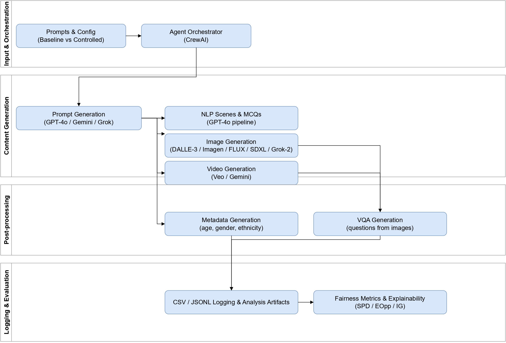

AI Fairness Data Generation and Question Answering System¶
Transparent tools and standardized benchmarks for fair, explainable, and accountable generative AI.
The rapid growth of generative AI brings powerful capabilities—but it also magnifies long-standing concerns around bias, fairness, and representation. Many models reproduce stereotypes embedded in training data, especially around demographic attributes (e.g., gender, ethnicity, age). This project enables systematic, controlled experimentation so researchers and practitioners can pinpoint when and why bias occurs—and what actually mitigates it.
🌍 What is the project about?¶
The AI Fairness Data Generation and Question Answering System is part of Vector Institute's contribution to the broader AIXPERT Project, a multi-institutional initiative, to develop tools and benchmarks for fairness-aware data generation and evaluation in generative AI.
It provides:
- Controlled synthetic datasets to isolate bias-inducing factors safely and reproducibly.
- Agentic automation (CrewAI + custom LLM agents) for prompt generation, content creation, metadata, and QC.
- Fairness metrics & explainers to visualize model behavior and surface disparities.
- Open, configurable pipelines aligned with responsible AI practices and emerging governance needs.
Objectives¶
-
Develop a Controlled Data Pipeline Create a reproducible, configurable pipeline for generating text, image, and video with precise control over demographic and contextual variables.
-
Enable Fairness-Aware Benchmarking Provide tools to build matched baseline vs. fairness-aware datasets for bias diagnosis and mitigation experiments.
-
Support Multi-Domain Risk Analysis Generate multimodal data for hiring, healthcare, legal, education, and more, covering risks like bias, toxicity, misinformation.
-
Integrate Agentic AI for Automation Orchestrate generation and QC with CrewAI and custom LLM agents (prompts, assets, annotations, validation).
-
Advance Interpretability & Explainability Combine zero-shot LLM explainers and fairness metrics to produce interpretable assessments and visualizations.
-
Foster Open Research & Collaboration Share configs, tools, and docs openly to enable reproducible research and transparent governance.
Pipeline¶

Recent updates¶
- Released data generation pipeline (multimodal, configurable, agent-orchestrated).
- Single-agent pipeline prototype for rapid dataset bootstrapping.
- NeurIPS 2025 LLM-eval Workshop paper: Bias in the Picture: Benchmarking VLMs with Social-Cue News Images and LLM-as-Judge Assessment
- Preprint: TRiSM for Agentic AI: A Review of Trust, Risk, and Security Management in LLM-based Agentic Multi-Agent Systems
- TechRxiv article: Responsible Agentic Reasoning and AI Agents—A Critical Survey
- Poster: Single-Agent TRiSM (NeurIPS LAW)
Have feedback or want to contribute? See the Team page and open an issue or pull request.
License¶
This code in this repo is released under the MIT License.